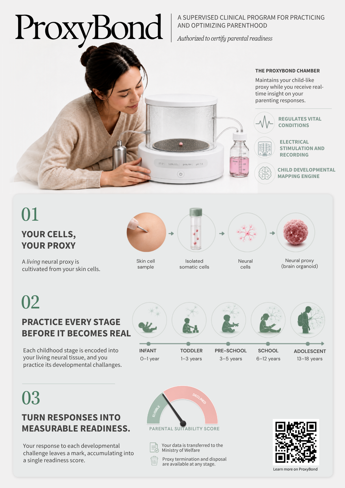

Cultivation of neural tissue
Your skin cells are cultivated into living neural tissue and developed into a cortical organoid over approximately 7–12 weeks.

Better parenting begins before birth
ProxyBond was founded on a simple premise: parenthood should not begin with the first irreversible mistake. Our supervised clinical program cultivates a living neural proxy from your own cells, allowing you to practice responses to the emotional, cognitive, and relational challenges of every developmental stage before you become a parent.
Inside the ProxyBond Chamber, your proxy is maintained, stimulated, and monitored as it progresses from infancy through adolescence. Each interaction reveals how your habits, timing, stress responses, and capacity for repair affect the development of a neural state. These changes accumulate into a measurable parental-readiness profile used to determine conception eligibility.

View full procedure
Your skin cells are cultivated into living neural tissue and developed into a cortical organoid over approximately 7–12 weeks.

The sealed chamber regulates temperature, oxygen, pH, perfusion, and sterile containment while continuously recording neural activity.
Instructions
The Developmental Mapping Engine translates each developmental stage into age-specific neural activity patterns and measurable responses.
Read more04

05
The proxy is generated from your cells and exposed to developmentally mapped neural patterns. It does not predict a specific future child, but serves as a personalized model for evaluating how your responses influence neural regulation over time.
You are presented with age-specific parenting scenarios. Your speech, facial expression, timing, touch, and decisions are translated into neural stimulation patterns. The proxy’s resulting state changes are then recorded and evaluated.
Readiness is determined through repeated measurement of regulation, recovery, stability, and accumulated changes in the proxy’s neural state across multiple developmental stages.
Yes. Your final readiness profile is reviewed as part of the clinic’s conception-eligibility certification process.
Additional simulations may be conducted, but the proxy cannot be restored to an earlier baseline. Its neural response depends on its accumulated interaction history, and established state changes may persist despite later corrective input.
No. Each cultivated neural sample develops as a unique biological system. Even when samples are generated from the same parents and exposed to the same developmental protocol, they may produce different response patterns, just as siblings can differ despite sharing much of the same genetic background. Repeating the cultivation process does not guarantee the same neural trajectory or readiness outcome.
Bezalel Academy of Arts and Design
1 Zmora Street, Jerusalem, 9515701
24.7.2026–6.8.2026
Sunday–Thursday: 12:00–22:00
Friday: 12:00–17:00
Meital Geva, PhD
meitals112@gmail.com
Tomer Sapir
05